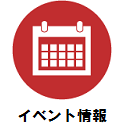
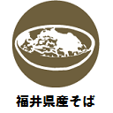
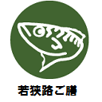
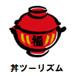
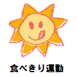
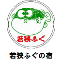
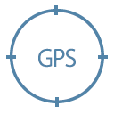

福井県や県内市町が提供するイベント情報を地図や現在位置から気軽に見ることができます。
地図上や、画面下にあるアイコンをタップまたはクリックしてご利用ください。
各アイコンの機能説明
| イベントを表すアイコンです
選択することでイベント全体を表示します | |
| 「おいしい福井県産そば使用店認証店」を表すアイコンです 選択することで認定店全体を表示します（詳細はこちら） | |
| 「若狭路ご膳」新鮮な海の幸など、嶺南地域ならではの豊かな食材を使った昼食メニューを提供するお店を表すアイコンです 選択することで提供店全体を表示します（詳細はこちら） | |
| 「丼ツーリズム in ふくい」福井県公式ガイドブック「丼ツーリズム in ふくい」で紹介しているお店を表すアイコンです 選択することで提供店全体を表示します（詳細はこちら） | |
| 「おいしい食べきり運動」は、残ってしまった料理を家庭では新たな食材としてアレンジ料理に活用し、外食時には持ち帰って家庭で食べきろう！という運動で、その協力・応援しているお店を表すアイコンです 選択することで提供店全体を表示します（詳細はこちら） | |
| 若狭ふぐ料理を取り扱う県内の宿泊施設を「若狭ふぐの宿」として認証されているお店を表すアイコンです 選択することで提供店全体を表示します（詳細はこちら） | |
| 公共施設を表すアイコンです | |
| 地図を現在位置を中心に表示します ※GPSなどをONにしてご利用ください | |
| このヘルプを表示します |
福井オープンデータナビは、福井県から CC BY で提供されている、福井県オープンデータを使用しています。
このヘルプは、タップまたはクリックで閉じます